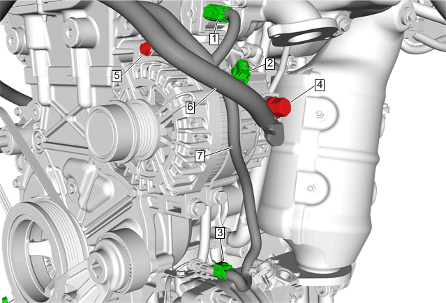
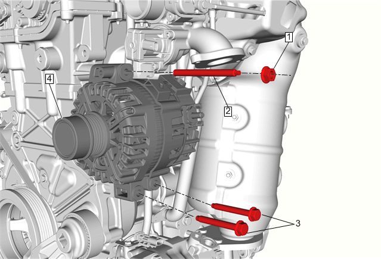

发电机的更换（LI6）
拆卸程序
- 1.断开蓄电池负极。蓄电池负极电缆的断开和连接
- 2.空气滤清器总成»拆下—空气滤清器总成的更换
- 3.空气滤清器出气管»拆下—空气滤清器出气管的更换
-
4.增压空气冷却器进气软管螺栓(1)»拆下[2x]
- 5.增压空气冷却器进气软管(2)@增压器»拆下
-

6.电气连接器(1, 2, 3)»断开
- 7.蓄电池正极和负极电缆螺母(4)@发电机»拆下
- 8.线束支架螺栓(5)»拆下
- 9.线束支架»拆下
- 10.线束(6, 7)»重新定位
-

11.发电机螺母(1)»拆下
- 12.发电机螺柱(2)»拆下
- 13.发电机螺栓(3)»拆下[2x]
- 14.发电机(4)»拆下
安装程序
-
1.发电机(4)»安装
- 2.发电机螺栓(3)»安装并紧固[2x]22N•m(16 lb ft)
- 3.发电机螺柱(2)»安装并紧固9 N•m(80 lb in)
- 4.发电机螺母(1)»安装并紧固22N•m(16 lb ft)
-
5.电气连接器(1, 2, 3)»连接
- 6.线束支架»安装
- 7.线束支架螺栓(5)»安装并紧固9 N•m(80 lb in)
- 8.线束(6, 7)»重新定位
- 9.蓄电池正极和负极电缆螺母(4)@发电机»安装并紧固22N•m(16 lb ft)
-
10.增压空气冷却器进气软管(2)@增压器»安装
- 11.增压空气冷却器进气软管螺栓(1)»安装并紧固[2x]22N•m(16 lb ft)
- 12.空气滤清器总成»安装—空气滤清器总成的更换
- 13.空气滤清器出气管»安装—空气滤清器出气管的更换
- 14.连接蓄电池负极。蓄电池负极电缆的断开和连接